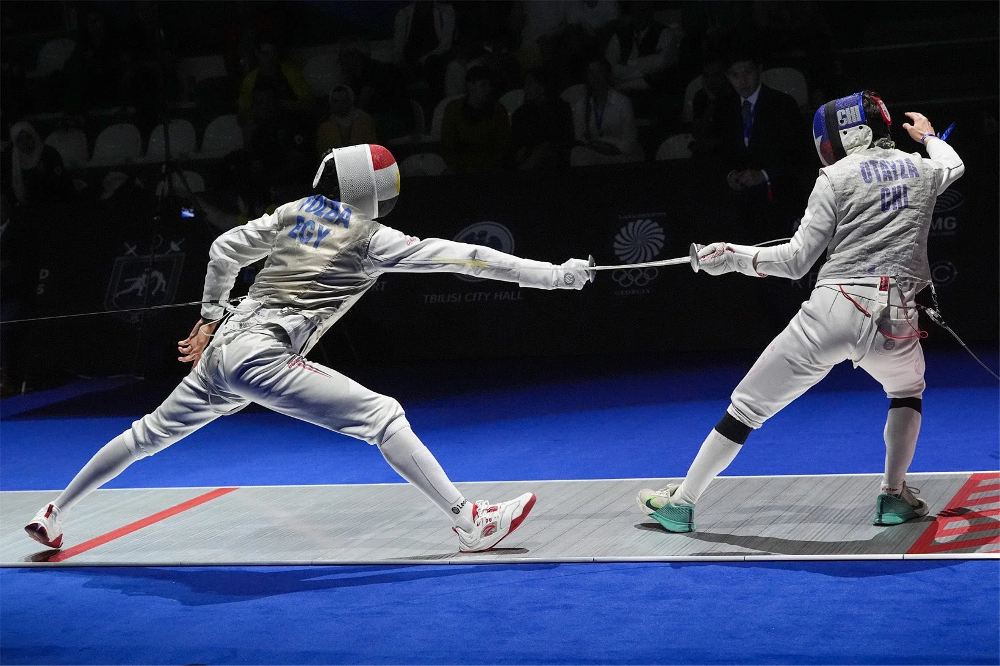

I enjoy competitive programming and do well, especially
considering that I only started about half a year ago.
I am currently working on a foundational dynamic programming knowledge
and looking to be mroe competitive in regional competitions.
Personally, I think it is a lot of fun, as it mixes implementing a template alongside
"aha" moments and key insights.
Additionally, I do fencing in the Epee discipline since a year and a half,
and have scored a 7th place finish in a regional contest.
I am left handed, so that could be considered an advantage, but nevertheless I need
to work more on my distance.

I also enjoy gaming now and then, mostly playing Valorant or Totally Accurate Battle Simulator.
Sometimes, I play strategy games like Shogun 2 or Age of Empires 3.